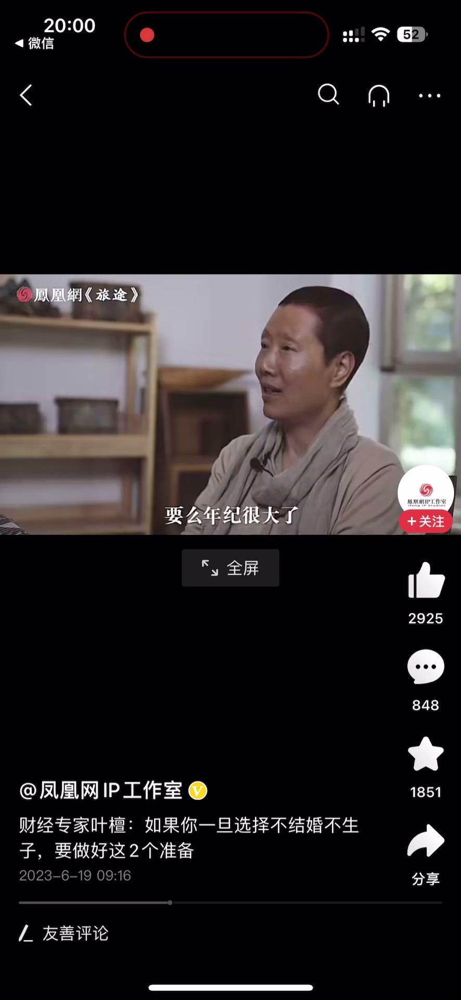
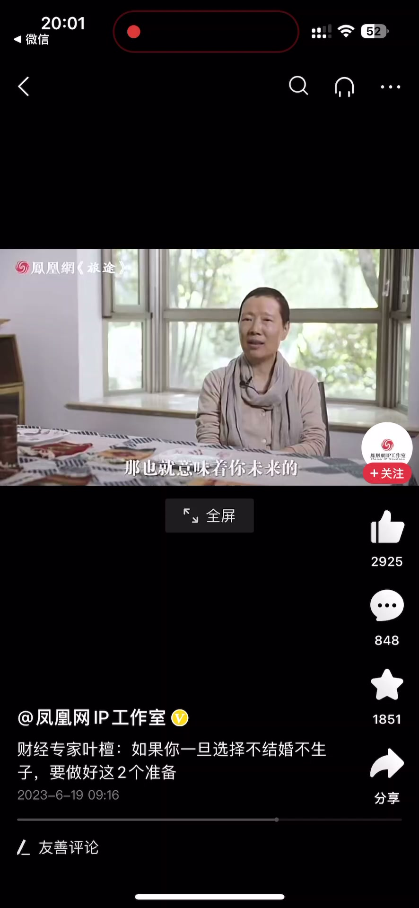

内容要点
一段 1 分多的人生思考：如果选择了不结婚、不生子，要做好两个准备。第一个准备是扛住外界的压力和内心的压力——传统社会的催婚、生病衰弱时身边无人陪伴、五十多岁再后悔就来不及了；第二个准备是要有足够的经济实力——婚姻本质上是经济合伙人，不婚不育意味着抗风险能力更低，需要提前储备专业能力、职场能力、赚钱能力和调动资源的能力。
知识结构
外界：传统社会的催婚和各种或明或暗的压力；内心：头疼脑热、身体衰弱时身边没有亲人，父母年迈无法照顾，能不能接受？五十多岁再后悔就迟了，世上没有后悔药。
婚姻本质是经济合伙人，两个人抗风险能力更大；不结婚不生子抗风险能力低，要提前预备专业能力、职场能力、赚钱能力和调动资源的能力。最怕五十、六十岁再后悔，讲者承认自己「有觉得不圆满」。
不婚不育不是潇洒就完事，而是两个准备的叠加：扛得住外界与内心的压力，再配得上足够的经济实力——否则等五十、六十岁再后悔，就真的来不及了。
00:00-00:35第一个准备：扛住外界的压力与内心的孤单
开场提出前提：如果你选择了不结婚、不生子，要做好两个准备。
第一个准备是外界的压力以及自身的压力。外界——中国还是传统社会，会有各种催婚、各种或明或暗的压力加到身上。
第二个压力是自己内心的压力：当你有个头疼脑热、比较衰弱的时候，身边没有至亲的人陪伴；尤其是像我这个年纪，生病了父母要么不在了要么年纪很大了，他们没有办法来照顾。这个时候你是不是能够接受自己的内心？
如果你到了五十多岁再后悔，就迟了——这世界上是没有后悔药的。


00:36-01:17第二个准备：足够的经济实力
第二件事情是要有足够的经济实力。本质上婚姻也是一种经济合伙人制，两个人抗风险的能力会更大。
如果你不结婚不生子，那也就意味着你未来的抗风险能力是比较低的，那我们就要提前做好预备：比如你的专业能力、职场的能力、赚钱的能力，以及调动一些资源的能力。
当这些东西都有的时候，那我们才可以说：很好，这是我主动的选择。
人最害怕的是后悔——到五十岁、六十岁再后悔，那不行。被问到「那您有后悔过什么吗」，讲者回答：我有觉得不圆满。



完整转录（43段）
以下文本由 Whisper medium 模型自动转录，可能存在少量识别误差，已尽可能修正。
如果说你选择了
一旦选择了不结婚不生子
要做好两个准备
第一个准备是外界的压力
以及自身的压力
外界当然中国还是传统社会
它会有各种催婚
有各种或明或暗的压力会加到身上
第二个压力是自己内心的压力
当你有个头疼脑热
当你比较衰弱的时候
身边没有自亲的人陪伴
尤其是像我这个年纪生病了
父母要么不在了
要么年纪很大了
他们没有办法来接近照顾的
这个时候你是不是能够接受
自己的内心是不是能够接受
如果你到了五十多岁再后悔
就辞了
这世界上是没有后悔药的
第二件事情是
要有足够的经济实力
本质上婚姻
它也是一种经济的合伙人质
比一个人抗风险能力会大
如果你不结婚不生子
那也就意味著你未来的
抗风险能力是比较低的
那我们就要做好提前做好预备
比如说你的专业的能力
职场的能力
赚钱的能力
以及调动一些资源的能力
当这些东西都有的时候
那我们可以说
哎很好
这是我主动选择的
人最害怕的是后悔
到五十岁六十岁再后悔
那不行
那您有后悔过什么吗
我有觉得不圆满